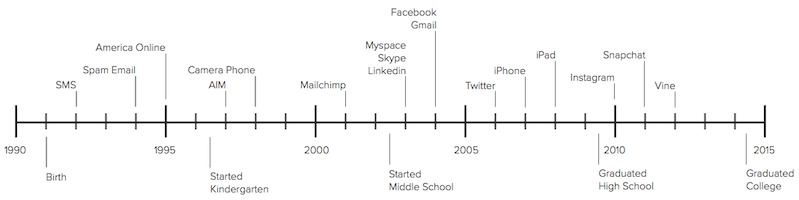
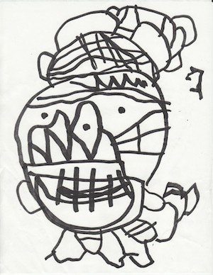

I was born in 1991: a time when phones were still attached to the wall and caller ID was the cool new thing to have. The most automated part of calling someone then was dialing their phone number from memory, but even that luxury only extended to your twenty closest friends. By this time, handwritten letters were a dying form of communication. My experience with hand written letters extends no further than writing birthday thank you notes and a very brief exchange with a pen pal, organized by my second grade teacher.
The generation before ours likes to criticize Millennials for the way we communicate with each other. For them, Facebook, Snapchat, and texting are alien methods of communication, but for us Millennials, it’s just the latest form of conversation. There hasn’t been a year in our lives that hasn’t offered a new way of talking to each other. Communication has been this weird, dynamic thing that we have just kept up with — but in doing so, our generation has lost the wonderful experience of sending and receiving handwritten letters.
Millennials don’t have the deep-rooted connection to handwritten letters that our parent’s generation has. It isn’t our tradition. As a generation, speed and efficiency in communication has been engrained into our lives. One of my earliest memories was a time when I was maybe three years old. I was sitting down on the floor of my mother’s office, scribbling out a drawing. When I was done, I reached up to my mom and asked her to fax it to my grandfather up in Canada. No more than ten minutes later, I was on the phone with him, talking about my drawing.
The unavoidable drama of middle school and high school was the perfect catalyst for the mass adoption of instant messaging and text messaging, respectively. But the adoption of tech in our early lives was not the only trend that was influencing the way in which we communicated. In the first decade of my life (1991–2001), the world’s population increased by 800 million people [1] — an increase of 15% (the U.S. experienced 20% growth in this period). That is the equivalent of one New York City every five weeks.
Of course, none of us were aware of this change at the time, but the impact that it had and will continue to have on our social lives is obvious. Even the most introverted individuals of my generation will likely interact with more people in their lives than all of our parents ever have. How can this not be true when the world’s population has nearly tripled since 1950?
When I was a kid, I struggled to remember twenty phone numbers. Since then, I’ve met thousands of people, and remembering any amount of detail about this many people is an impossible feat. Social networks, all of a sudden, feel so justified — at least, that is, when I view it simply as a database of everyone that I have ever had some sort of meaningful experience with.
The closest thing to this in the nineties was a rolodex. But what a rolodex didn’t do, was constantly update you on all of these people. It didn’t notify you of everyone’s birthday and it didn’t let you know what everyone did last weekend.
But is this really necessary?
Around the same time that I was born, a British anthropologist named Robin Dunbar was developing an equation [2] that estimates the social channel capacity [3] of humans. The Dunbar Number, as it has come to be known as, states that the average human is capable of having 150 casual friends. In his research, Dunbar found that this number roughly scales by a factor of three to define several other tiers of relationships. If you dial it down, we typically have fifty close friends, fifteen friends that we’re very comfortable with, and our core support group is made up of just five individuals. Conversely, in opening up the lens, Dunbar found that we keep about 500 people at the acquaintance level and we roughly attach 1500 names to faces (although this seems optimistic in my case).
Research [4] has found that although social media has enabled efficient or strategic networking, it has yet to augment our social capacity. Whether you have 300 Facebook friends or 3000, you still likely only keep up with 150 casual friends. Now while these tiers of relationships are fairly fixed in size, the individuals that make up our social groups are in constant ebb and flow. High school relationships fizzle out as college classmates move in to fill the void.
Facebook and the other social networks lack the intelligence required to automatically mimic this dynamic state of our social lives. Instead, it puts the responsibility on us to deliberately unfollow people; a social interaction that is so unnatural. Instead of simply letting people fade out of our lives, these people become trapped in our social networks. We hold on to some fragment of a relationship that was meant to blow away in the wind.
On a daily basis, we scan through our social feeds to keep up to date with everyone we care about or have ever cared about. Social media has a really powerful impact on our social lives in two ways: (1) it allows us to quickly reignite old relationships and (2) it adds another dimension to current relationships by allowing asynchronous sharing of thoughts, emotions, and funny cat videos. By combining those two things, however, it creates a social experience that in some way, just feels so watered down. What our fifty close friends share competes with all of the other content shared by those we are loosely connected to.

One Sunday morning about six weeks ago, I sat down at my desk with the day’s first cup of coffee. In a bizarre transition to the other extreme of the social spectrum, I pulled out a piece of paper and began to write a letter to an old high school friend. I had forgotten how painstaking and arduous of a process writing a letter is. My creative world revolves around messy stacks of post-it notes with scribbled thoughts, so maintaining neat handwriting and straight lines over the course of three pages felt medal-worthy.
The whole process took more than an hour. Ask yourself: When was the last time that you spent an hour writing a message to a single person?
Snail mail is horribly inefficient — since that first letter six weeks ago, a grand total of just three messages have been exchanged between my friend and I — but it is such a wonderful way to invest in a relationship. Writing a letter by hand carries value not just in thoughtful content, but in context. If I had taken that exact letter, word for word, and sent it to my friend in an email — it just wouldn’t be the same. Letters are filled with imperfections in spelling and grammar that are forgiven by the recipient, not corrected by the tool in which you use to send the message. Words and sentences scribbled out and replaced reveal the thought that was injected in the message, and the value of all of this is only amplified by the anticipation of a response that builds over the several days or weeks elapsed since you last sent a message.
Will hand written letters become the medium of my day-to-day conversations? Of course not. That would be ridiculous. I will continue to use Facebook, Twitter, and text messaging because they do provide value in our social lives. But — and Millennials, listen up here — the generations before ours had something special going with hand written letters, and I hope they make a comeback.
References